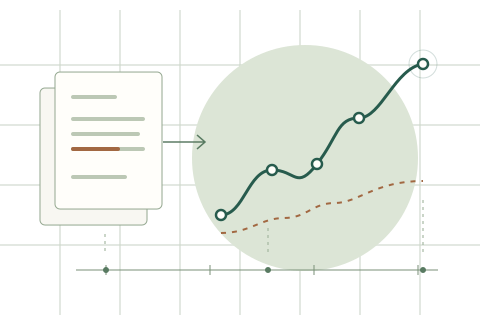

Clinical NLP
Learning from clinical narratives, with a focus on pediatric electronic health records.
Biostatistics & biomedical informatics
PhD student in Biostatistics
Duke University
I study what we can learn from the language in health records. My work brings clinical natural language processing and biostatistics to questions in child development.

Clinical stories.
Longitudinal perspectives.
Conceptual illustration · no patient data
Learning from clinical narratives, with a focus on pediatric electronic health records.
Studying late talking, diagnostic timing, and longitudinal approaches to autism prediction.
Hospital-harm evaluation is a further research interest. A public project summary is forthcoming.
Jiang Shu, Danai Kasambira Fannin, Geraldine Dawson, Gary Maslow, Matthew M. Engelhard, Lauren Franz, Benjamin A. Goldstein.
JAMIA Open · 9(3), ooag090.
Fengnan Li, Elliot D. Hill, Jiang Shu, Jiaxin Gao, Matthew M. Engelhard.
ACL · Volume 1: Long Papers · 30263–30283.
A little background
I’m a PhD student in Biostatistics at Duke University. My research interests sit at the intersection of clinical language, pediatric health records, and development over time.
Before my doctoral studies, I completed a Master of Biostatistics at Duke and studied chemistry at the University of California, Santa Barbara.
Academic background